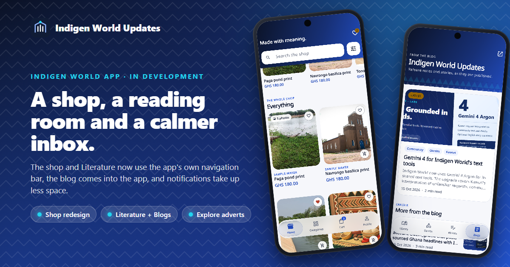
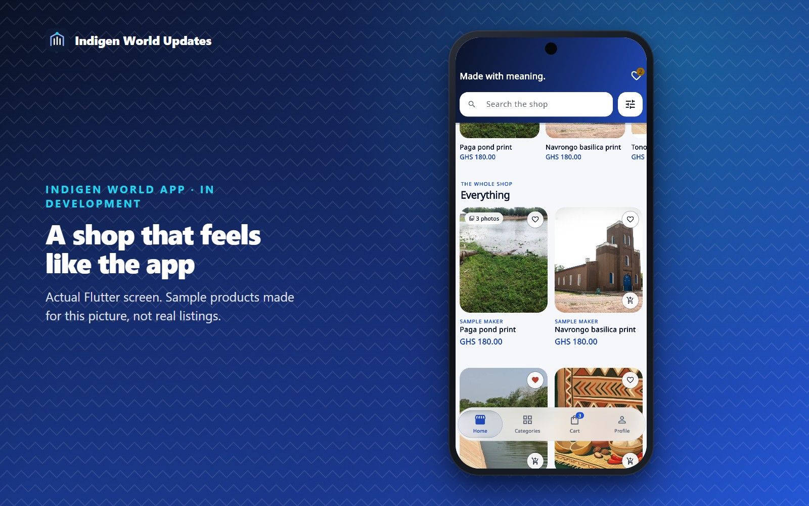
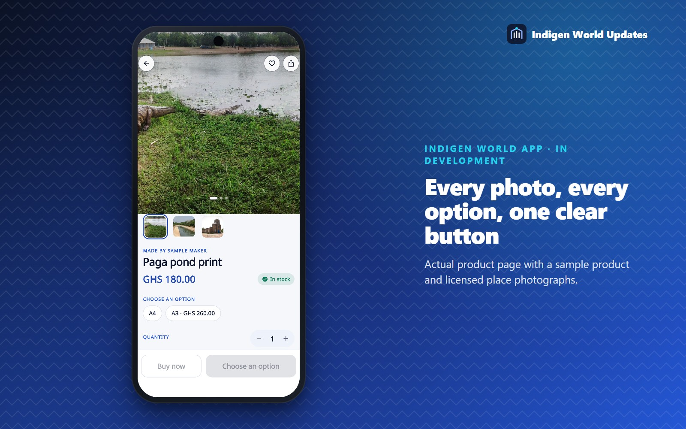
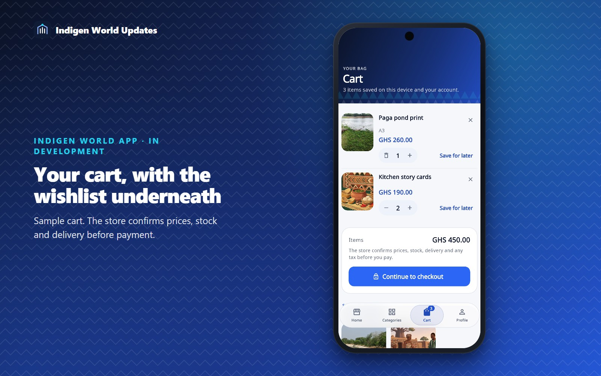
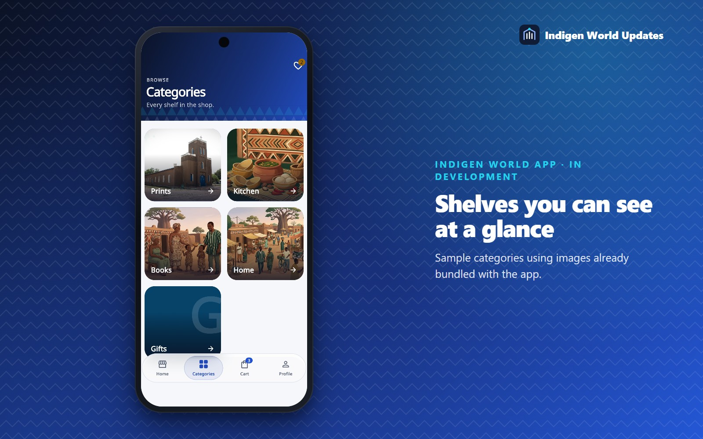
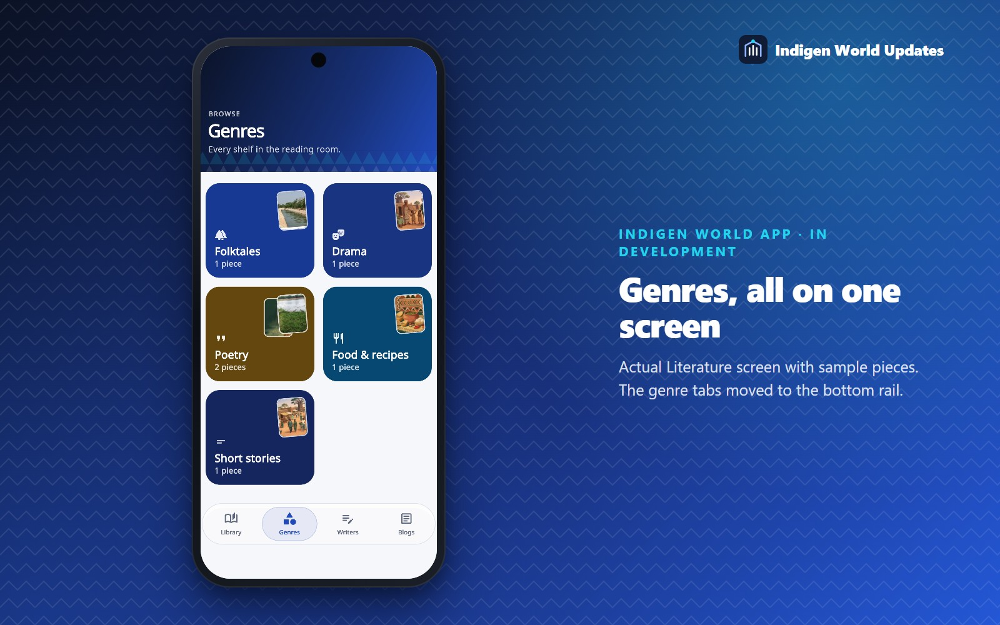
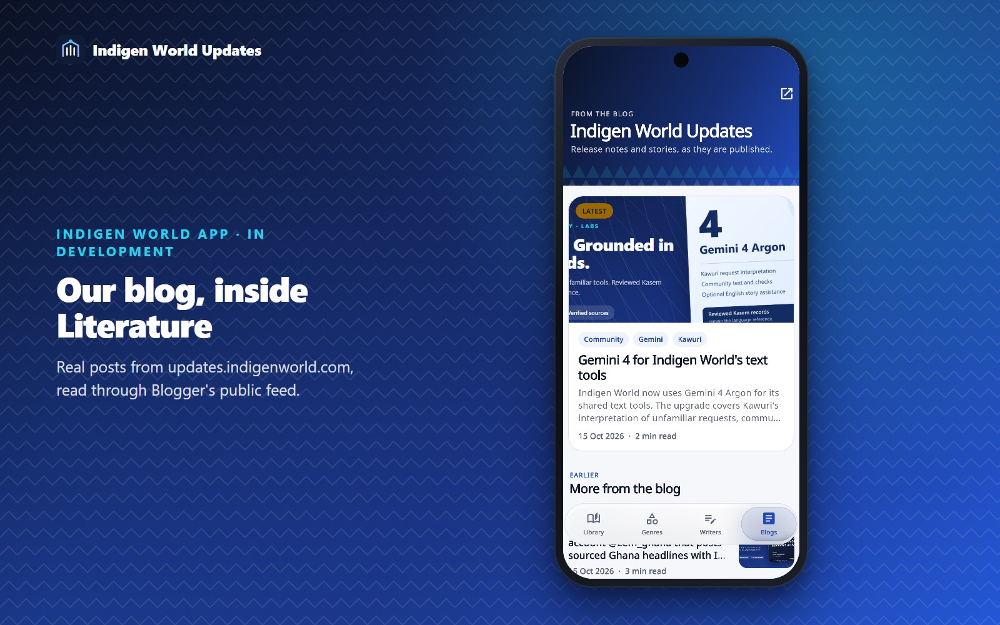
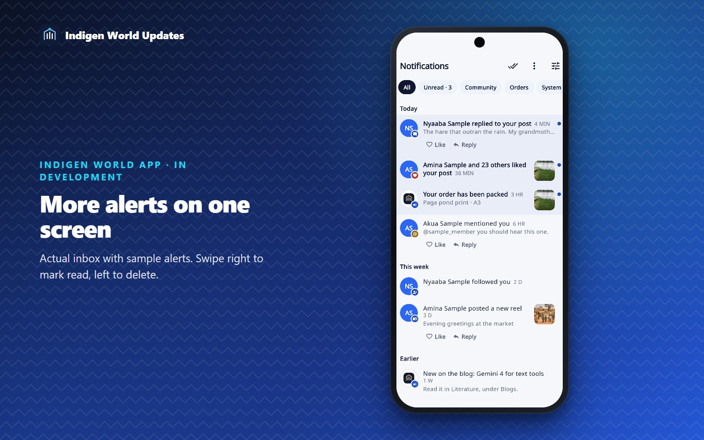
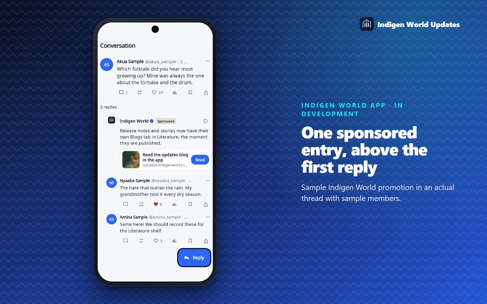
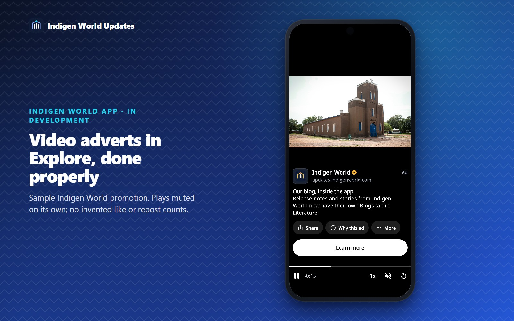

In development — 17 October 2026. These changes are built and tested in the Indigen World app's code. They are not in a store release yet, and the shop's checkout stays closed until the store team finishes setting it up.
This update changes four things you will notice straight away. The shop now looks and moves like the rest of the app. Literature has a bottom navigation bar with a new Blogs tab, where the posts we publish here appear inside the app. Notifications take up less space. And a single sponsored entry can appear above the first reply in a conversation, clearly labelled.
The shop used to open with a plain grey bar at the bottom of the screen, different from the one you use everywhere else. It now uses the same frosted bar as Music and the main app, with four places: Home, Categories, Cart and Profile. Going from Collection to the shop now looks like moving further into the app, not opening something separate.
Home opens on a deep blue banner with search pinned to the top, so you can search halfway down the page without scrolling back up. Categories appear as round shortcuts. New arrivals and things you looked at recently sit on their own shelves, and every product has a large photo, its maker, its price and a heart to save it. Products with nothing to choose have a small cart button for adding them in one tap. The filters can now also narrow the shop by a product's options, such as a size, once the store team adds them.

A product page now opens on the full photo. You can swipe between pictures, tap one to zoom, choose an option such as a size, set the quantity, and add to cart from a bar that stays at the bottom of the screen. Items that are priced on request show Ask for a price instead of a price, and they can never be checked out at zero.

The cart shows each item with its photo and option, a quantity control, an undo when you remove something, and your saved items underneath. The store still confirms prices, stock, delivery and any tax before you pay.


Literature used to put its genres in a strip across the top that you had to scroll sideways, so most of them were hidden off the edge of the screen. Literature now has its own bottom bar with four places:

The Blogs tab reads this blog directly from Blogger, so a post appears in the app as soon as it is published here. Nobody has to copy it across. Posts open in a reader inside the app that uses your text size and dark mode, and each one links to the web version. The last posts you loaded stay readable when you are offline.

Each notification used to be a large card with a big picture and a row of buttons, so only two or three fitted on a phone screen. Now each one is a single compact line: who it is from, what happened, how long ago, and a small picture at the end. You can swipe right to mark one as read, swipe left to delete it, or press and hold for more options. Like and Reply stay on the line, but only for replies and mentions you can actually respond to. A someone liked your post alert no longer has a Like button. Unread notifications have a light tint and a dot, and order updates now open the order they are about.

When you open a post or a reel's comments, one sponsored entry can appear just above the first reply, styled like a reply, as some community apps do. It always says Sponsored. It has no reply, like or share buttons, and it is never counted, quoted or notified as if someone had written it. Promotions from Indigen World carry our real logo. Google ads keep the advertiser's own name, picture and AdChoices mark.

Members with a membership never see it. It is counted once when it is actually seen, and it only takes space once an advert has loaded, so the thread never jumps under your finger.
Adverts in Explore now look like the video adverts you already know from full-screen feeds. The advert plays across the middle of the screen, muted, as soon as you reach it. Under it you see who it is from, the word Ad, a short message and one white Learn more button. Along the bottom there are controls to pause, see how much time is left, change the speed, turn the sound on and replay.

One difference is deliberate. Some apps show like, repost and reply counts under adverts. Ours have none, because nobody reposted or liked them, so we show what you can actually do instead: share the link, see why the advert is there, or report it. Google adverts in Explore use the same full-screen layout and keep the advertiser's own name and AdChoices mark. Members never see adverts.
All of this is built and tested in the app's code, but it is not yet in a released version of the app. The shop's checkout stays closed until the store team has set up delivery, policies and stock. The dedicated Google advert unit for comments has been created and configured for the next release build; it still needs testing on a real phone, and live ad serving has not been confirmed. Release builds without that configuration show no comment advert, including Indigen World's own promotions. Explore's new full-screen layout uses its existing Google advert unit. We will say here when these changes reach the app stores.
Photos: Dieu-Donné Gameli, Paga Crocodile Pond, CC BY-SA 3.0; Mwintirew, Basilica of Our Lady of Seven Sorrows, CC BY-SA 4.0; Apiu Akwojong Ezekiel, Tono Dam, CC0 1.0. Course illustrations are AI-generated artwork bundled with the app. The blog covers are from posts on this blog. People, products, orders and messages in the screenshots are samples.